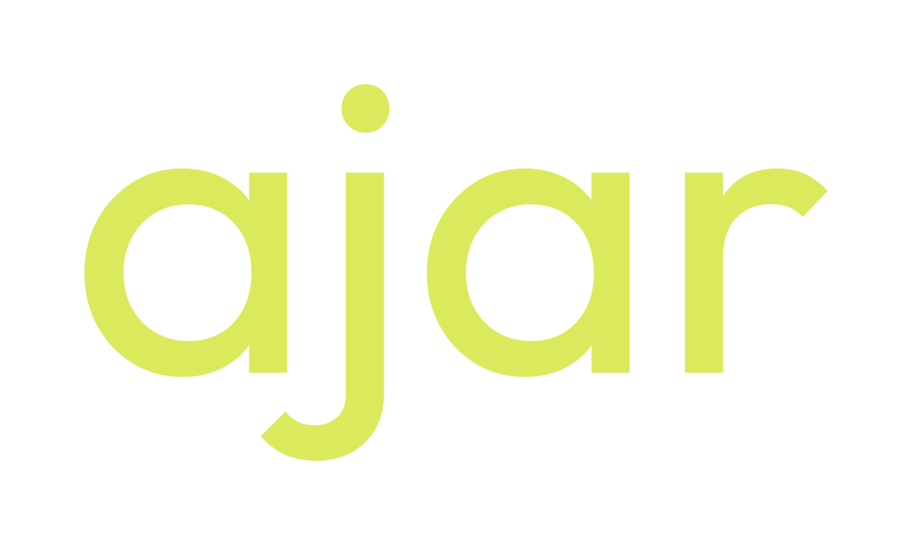

AJAR —
언제든 열려 있는
열려 있는 상태 자체를 정체성으로 삼습니다.
새로운 생각과 다음 변화가 들어올 여지를 남깁니다.
AJAR Brand Identity.
C1 심볼 · Outfit Regular 400 · Moss & lime
브랜드 정의부터 실제 사용까지 / v1.2 · C1 심볼 + Outfit Regular 400
심볼은 a.
이름은 Outfit.
C1의 열린 a는 독립 심볼입니다. 이름 ajar는 네 글자 모두 Outfit Regular 400으로 조판합니다. 두 요소는 따로 쓰거나 충분한 간격을 두고 함께 배치합니다.
기준: C1 심볼 / Outfit Regular 400 / 기본 커닝 / 추가 자간 0

언제든 열려 있는
현재의 형태를 가지면서도
새로운 생각과 다음 변화가 들어올
여지를 남깁니다.
An open state.
AJAR는 열려 있는 상태 자체를 정체성으로 삼는 브랜드입니다. 현재의 형태를 가지면서도 새로운 생각과 다음 변화가 들어올 여지를 남깁니다.
생각의 여지
새로운 관점이 더해지고
기존 판단이 달라질 수 있습니다.
형태의 유연함
각 프로젝트는 목적에 맞는
자기 모습을 가질 수 있습니다.
이어갈 가능성
멈추거나 끝낸 일에도
다음 시작의 여지를 남깁니다.
‘언제든’은 시작부터 마무리 이후까지 이어지는 태도입니다. ‘열려 있는’은 방향과 가능성을 미리 한정하지 않는다는 뜻입니다. 무엇에 열려 있는지는 AJAR가 만들어가는 일과 관계를 통해 채워집니다.
작은 실험과 학습 기록은 이 정체성을 실천하는 방식입니다. 시도하고, 배우고, 바꾸고, 다시 이어가는 과정에서 AJAR의 열려 있음이 드러납니다.
정원, 한 획, 열린 틈.
정원의 몸통에 45°의 열린 부분을 남기고, 하나의 선으로 오른쪽 세로획까지 연결합니다. 굵기 10의 둥근 끝과 바닥보다 짧은 세로획이 또렷함과 유연함을 함께 만듭니다.
웹 헤더와 첫 소개에는 워드마크를, 아이콘과 프로필에는 심볼을 사용합니다. 기준 로고는 그대로 유지하고 프로젝트별 그래픽에서 열린 위치와 크기를 변주합니다.
로고 윤곽에서 선 굵기의 2배만큼 보호 여백. 제공 SVG에 포함했습니다.
디지털 기본 최소 가로 크기.
심볼 / 워드마크 · 여백 포함
심볼은 한 번에 이어지는 열린 경로.
비율·열림·선 굵기·끝처리를 유지합니다.
차분한 바탕, 새로운 생기.
면적 비율 70 : 25 : 5를 출발점으로 사용합니다. 밝은 바탕에는 녹색 로고, 녹색 바탕에는 라임·흰 로고를 사용합니다. 녹색 글자 대비: Warm paper 10.79:1 / Open lime 9.34:1.
담백하게, 명료하게.
영문 브랜드 서체는 Outfit입니다.
로고는 Regular 400 / 한글 본문은 시스템 산세리프
본문 16px / 행간 1.7을 기본으로 읽기 편한 여백을 남깁니다.
“생각이 더해질 여지를 남깁니다.”
“멈춘 지점에서 다시 이어갑니다.”
형태는 유지하고, 여지는 열어두고.
열린 윤곽과 가변하는 틈을 그래픽으로 확장합니다. 라임은 연결되거나 새로운 요소가 들어오는 부분에 작게 사용합니다.
모션은 한 획이 그려지는 흐름을 활용하며 동작 줄이기 설정을 존중합니다. 로고의 틈을 메우거나 그림자·그라데이션을 추가하지 않습니다.
C1 심볼과 정제한 워드마크.
녹색·라임·흑백 심볼과 워드마크 SVG, 투명 PNG, CSS·JSON 컬러 토큰, 가이드 문서와 BI 보드를 담았습니다. C1 심볼과 Outfit Regular 400 전체 워드마크를 기준으로 정리했습니다. 첫 글자를 포함한 ajar 전체가 같은 서체이며 벡터 파일은 폰트 설치 없이 사용할 수 있습니다.


디지털 사용 기준입니다. 영문 브랜드 서체는 Outfit입니다. 한글 본문 서체·인쇄 색상·16px 전용 보정은 후속 작업으로 남겨두었습니다.